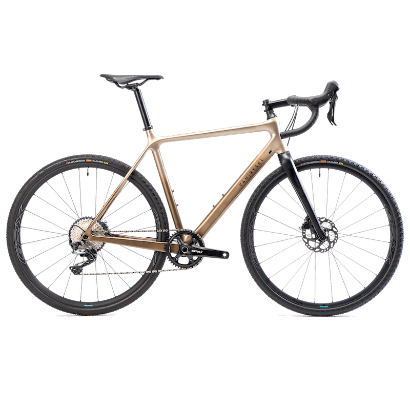

 ...
...
GRAVELBIKE EDR OFFROAD GRX 1X VAN RYSEL
Tested in competitions. Very efficient on country roads, and surprisingly versatile on gravel roads. A bike born to roll off-road, with a fantastically playful frame and the entire reliable group SHIMANO GRX (driveline and wheels). Tubeless ready tires of 700x38.
20 999kr
Referens : 8601607
Referens : 8601607